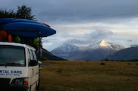

{kind=link}
{kind=link}
{kind=link}
{kind=link}
{kind=link}
{kind=link}
{kind=link}
{kind=link}
{kind=link}
{kind=link}
{kind=link}

Hi. We're the OUCC. We run weekend kayaking trips to exotic locations around the South Island of New Zealand. Think Tekapo, Hawea, Rangitata. Beautiful.
Read on for more information.
{kind=link}
Contact Us
theoucc(at)gmail(dot)com
Can't work this out? That's ok, the tramping club might take you.
Basics
Most of our activity happens during the first six weeks of semester one each year (Feb-May). After the mid-semester break, the water gets colder, and students start to have real work to do.
If it's later than that when you're reading this, you can still email us and have a chat, but the weekend trips are at the start.
However, if it's before or DURING semester one, email NOW. Our season is over so quickly, and it's easy to miss out if you don't act fast.
You can still become a member later on in the year. We often take the boats out to the various beaches around Dunedin, and there are a few big competitions around the South Island. You are welcome to borrow gear to go on your own trips if you're a member.
Websites are funny things. If you want the latest info, head over to our Facebook page. No, seriously, the stuff here is good info, but you REALLY want to check that out.
So.. what do you do? Canoe?
Um.. No. It's really just whitewater kayaking. The name is a vestige of our history and we love the acronym. Plus, all our gear has "OUCC" stamped on it, so we just kept the name.
How does it work?
If you are at all interested in the club, get onto our mailing list for the year!
You can email us at the above address or sign up on Clubs and Socs Day.
We send an email out early in the week, usually Tuesday night, about the upcoming trip that weekend.
Start thinking about whether you can come.
On Thursdays at around 1:30pm, we have a trip meeting in the Clubs and Socs Building.
{kind=link}
This is where we give you a bit more information and you put your name on the trip list. We only have a certain amount of equipment to lend out, so it's first come, first served.
On Friday afternoon, we all meet at the gear shed around the back of Clubs and Socs, and you pick out all your gear.
We leave after this so make sure you have everything you want for the weekend.
You need a helmet, paddle, lifejacket, spray deck, and of course, a kayak. Talk to a member of the Exec for help choosing this.
When you've picked out the gear you want, please clip it all inside your kayak so it won't fall out during the trip.
We then pack all the gear onto the trailer. Please help as much as possible with this. Even if you can't tie knots (learn!), you can help lift boats onto the trailer.
{kind=link}
Once the trailer is loaded and all tied down, everyone gets into cars or vans and sets off on our adventure.
This is normally about 6:30pm, so we generally stop somewhere on the way for dinner.
Some of the camping spots are a long way from Dunedin so it's often dark when we get there. Bring a torch.
Sounds good, how much do I owe you?
We try to keep all costs as low as possible.Membership:
$60 if you don't have your own kayaking gear. You can use our stuff all year.
$30 if you have your own gear
Trip Cost:
Around $20-30 each trip.
This depends how far we have to drive and what the camping situation is like.
This fee pays for petrol, van hire, and accommodation.
I'm scared. I don't know anyone else going.
That's all you're worried about? This is consistently the friendliest bunch of people in Dunedin. You have a 2+ hour van ride to meet people before we even get there, so you'll be fine.
What should I bring?
Pack what you'd take to a two day camping trip at a place with no power or running water. Which could be sunny and hot or rainy and cold. This is New Zealand.
Still need ideas?
- Tent
- Sleeping bag
- Bed roll
- Food for 2x breakfasts, 2x lunches, and 1x dinner
- Alcohol for Saturday night (preferably in a non-glass container)
- Torch, preferably a headlamp
- Baking (optional but recommended)
- Camera
- Towel
- Sunblock
Clothes
- Warm clothes for sitting outside at night
- Clothes for kayaking in. Wetsuit are great. Good paddlejackets are also fine.
- Plenty of polyprops.
- Jandels for wearing around camp and in your boat. We often walk over rocks to get in and out of the water, so some shoes that can get wet are a good idea.
What should I expect?
Once we get to the camping spot on Friday night, we set up camp and go to bed. On Saturday morning, we get up fairly early, get our paddling gear on, and get dropped off at the "get-in" (where we get in).
Everyone is split into groups under instructors and they will look after you.
On Saturday, we generally do a morning paddle, come back to the campsite for lunch, then set off for an afternoon paddle somewhere.
After our last run for the day, we settle down at the campsite for dinner. What happens after this varies widely but usually involves the consumption of a good amount of alcohol and the having of a lot of fun. We're normally in the middle of nowhere with no other groups around, so anything can happen.
Sunday morning. Everyone gets up, some reluctantly, and we do another paddle somewhere. After that's finished, we go back to the campsite, pack everything up, load the trailer, and set off back to Dunedin.
We generally get back to the gear shed around 6pm, but it depends on the trip.
What's this Murchison thing everyone gets so excited about?
Murchison is a sleepy little town near the top of the South Island that happens to be crawling with amazing rivers for kayaking. The NZ Kayak School is even based here!
Every year, in the mid-semester break, the OUCC goes up to Murchison for a whole week of paddling and partying. We do two trips everyday, as well as numerous other activities. Your kayaking skills will improve heaps and you'll have a great time.
I've never kayaked before!
That's fine. Most of our members aren't strong kayakers when they start. If you want to learn, we'll teach you!
I can't eskimo-roll!
That's fine. Rolling isn't essential but the longer you stay dry, the more fun it is.
We running rolling instruction sessions up at Moana Pool on Wednesday and Friday mornings, from Trip One until the Easter break (Murchison), which you should attend. It's a lot easier to learn in a heated pool, and our instructors are very helpful. Plus, you can hang out in the spa afterwards!
I can't swim
Ooh. Well, you'll be wearing a lifejacket so you will definitely float, and the point is to STAY in the kayak, but most beginners fall out of their boats a couple of times. Come up to a rolling session and see if you're comfortable. Or learn to swim really quickly so you can come on the trips.
Is it safe?
Yes. As casual as we may seem, we take safety very seriously. Most of the work goes on behind the scenes. We have very experienced instructors, and the rivers we paddle on are generally not very dangerous and we know them well. Just wear your helmet and follow instructions. It seems a lot scarier than it is.
I'm a Grade III+ paddler. Is it worth me joining?
On most of the trips we aim to get a run or two in of a grade 3/4 section, but some trips are simply grade 2/2+ to give everyone a chance to get into it. Our club does have a lot of good paddlers and this is definitely the best way to connect with paddlers in Dunedin
Check out these links for some awesome events coming up:
Where in NZ do you go?
This depends on the year, but our main haunts are:
- Andersons Bay (introductory day)
- Tekapo (river and slalom course)
- Hawea
- Beaumont
- Rangitata
- Mavoura Lakes
- Murchison (week long trip in the April holidays)
There are a few others that we sometimes got to, but these have proven to be the most fun and reliable.